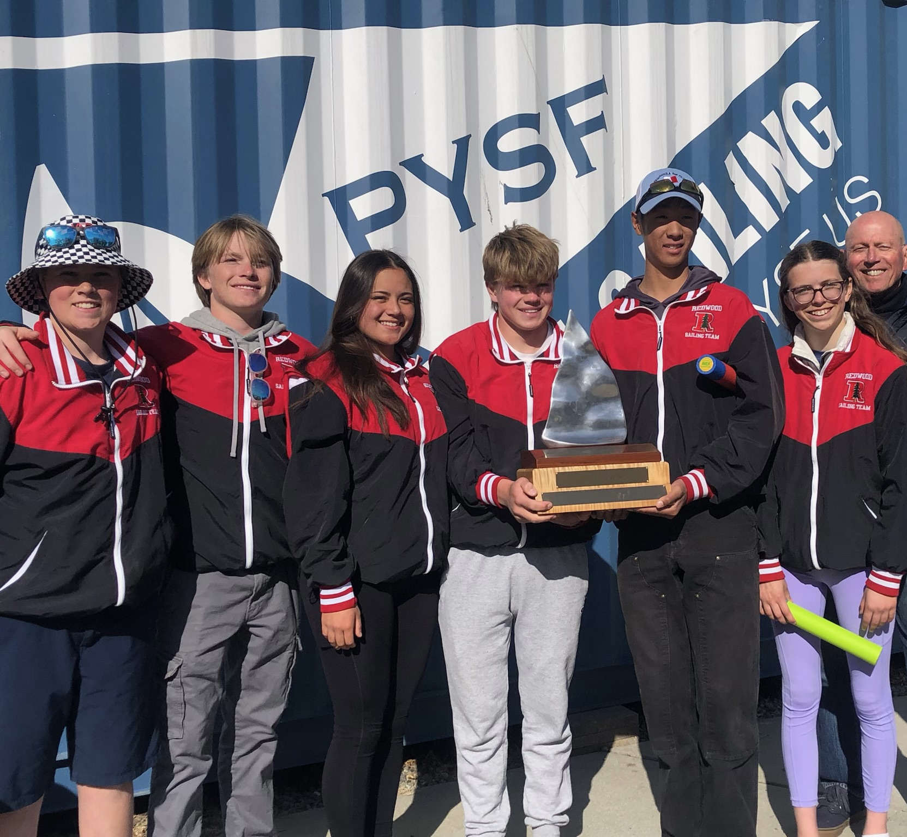

2024 Phebe Corckran King Memorial Trophy - June 1/2 - 6th overall out of 18
Gold PCCs - May 4/5 - 9th overall out of 19
Silver PCCs - April 27/28 - 5th overall out of 25
NorCal Divisional Championships - April 7/8 - 1st overall out of 18
PCISA Gaucho - March 9/10 - 11th overall out of 26
PCISA Golden Bear - February 23/24 - 25 overall out of 29
NorCal 6 - February 11 - 2nd in Gold
NorCal 5 - February 10 - 1st & 3rd in Gold
PCISA Rose Bowl - January 6/7 - 22nd overall out of 37
PCISA Anteater - November 11/12 - 12th overall out of 29
NorCal 4 - November 5 - 2nd in Gold, 1st in Silver
NorCal 3 - November 4 - 1st & 3rd in Gold
PCISA Sea Otter - October 7th - 11th overall out of 30
Norcal 2 - 9/24 - 1st in Silver
NorCal 1 - 9/23 - 1st in Gold and Silver
Latest Event - Phebe Corckran King Memorial Trophy
A 5 person team made up of skippers Morgan
Headington, Mark Xu, and
Rhett Krawitt along with crews
Akira Bratti and Henry Vare
traveled with Coach Dan Brandt to Annapolis. They competed in a National
Invitational regatta sailed in both CFJs and C420s. Although they struggled
at times with the heat, humidity, and long days, the team put up solid results
and finished the weekend in 6th out of 18 teams from across the East Coast,
Midwest, and West Coast. Off the water the team visited the Naval academy
there in Annapolis, Maryland and went to a team dinner while keeping
immaculate vibes. All in all a very fun regatta.
Regatta Photo

NorCal Divisional Championship Team Holding 1st Place Trophy